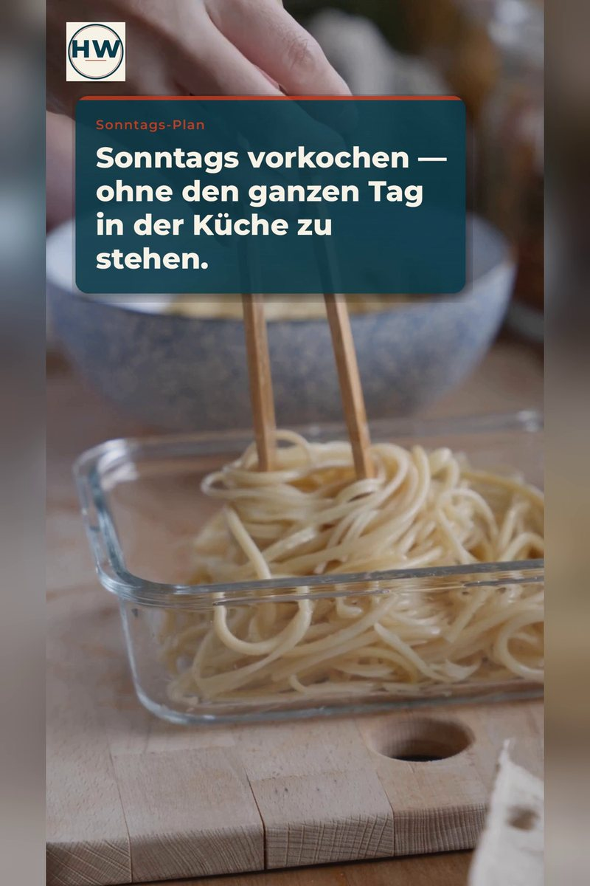
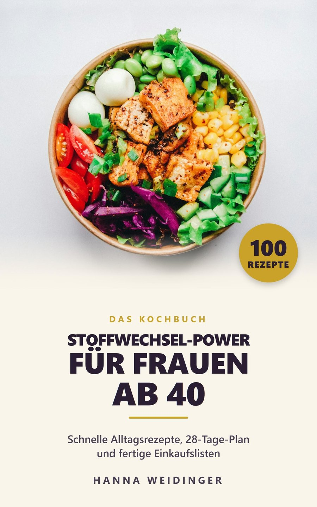
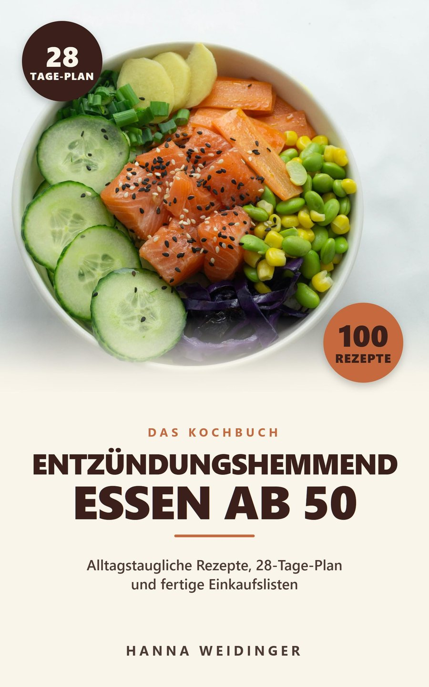
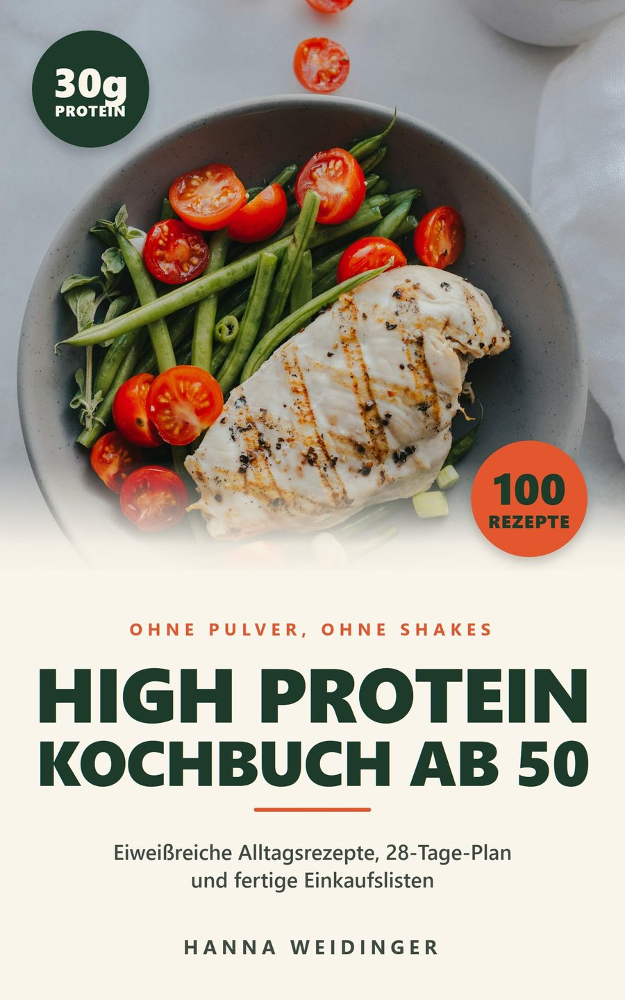

Plan Nr. 1
Vier Schritte am Sonntag

Ofengemüse, Weiße-Bohnen-Tomaten-Eintopf, Bulgur und Zitronen-Senf-Kräuter-Soße – einmal am Sonntag vorkochen, unter der Woche jeden Tag etwas anderes essen.
Zum PlanVon den Reels zur ganzen Anleitung
Du kommst von TikTok, Instagram oder Pinterest? Hier findest du zu jedem Reel den ganzen Plan.
Plan Nr. 1

Ofengemüse, Weiße-Bohnen-Tomaten-Eintopf, Bulgur und Zitronen-Senf-Kräuter-Soße – einmal am Sonntag vorkochen, unter der Woche jeden Tag etwas anderes essen.
Zum PlanDie Reihe
Hier sind die derzeit lieferbaren Titel. Preise und Verfügbarkeit siehst du bei Amazon. Ein weiterer Band folgt nach dem 10. Dezember 2026 und steht deshalb noch nicht auf dieser Seite.

Band 1
Schnelle Alltagsrezepte, ein 28-Tage-Plan und fertige Einkaufslisten.

Band 2
Alltagstaugliche Rezepte, 28-Tage-Plan und fertige Einkaufslisten.

Band 3
Alltagsrezepte, 28-Tage-Plan und Einkaufslisten für die Woche.

Band 4
Eiweißreiche Alltagsrezepte ohne Pulver und ohne Shakes, mit 28-Tage-Plan und Einkaufslisten.

Band 5
Rezepte für große Portionen, 28-Tage-Plan und Einkaufslisten.

Band 6
Rezepte mit 30 g Eiweiß je Hauptmahlzeit, Calciumwert je Rezept, 28-Tage-Plan und Einkaufslisten, ohne Pulver.

Band 7
Das Kochbuch mit 8 Wochenplänen und 100 Gerichten: sonntags vorkochen, jeden Tag anders.
Auf der Amazon-Serienseite siehst du alle zugeordneten Bände im Überblick.
Bitte beachten
Die Bücher und diese Seite ersetzen keine medizinische oder ernährungstherapeutische Beratung. Bei gesundheitlichen Fragen wende dich an eine Ärztin, einen Arzt oder eine qualifizierte Fachperson.
Texte auf dieser Seite und die Bücher der Reihe sind unter Verwendung digitaler Werkzeuge entstanden.